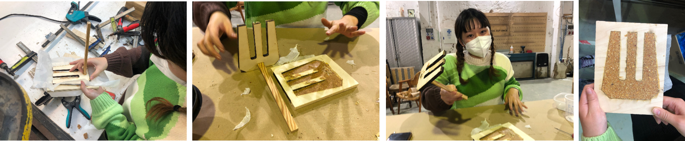

BIOMATERIALS with LAURA FREIXAS
In this second part of the experimentation with biomaterials, we explore the waste in context and how can we make part of the cycles of the food as a waste. What opportunities we have as a community to use them, and also, where do we have to start looking for them.
In this seminar, I discovered that people involved in the matter of biomaterials are not unifying forces to manage the waste; what I mean is that, people just collect it to develop whatever they need to and thats it. And the question is, What´s next?, or what happened after we finish what we are doing?
FINDING THE CONTEXT
PLENTY OF OPTIONS, AND APPARENTLY OWNERS ARE WILLING TO DONATE WASTE

THE CHOSEN ONE
BOUQUETS°°°°° FLOWERS FROM CEMENTERY
As a group by initiative of Andrea we chose the flowers of the cementery as a great opportunity to develop a design with meaning. We start with pick them up from the waste container in the cementery, we ask for permission and it was easy, the next time wasn´t neccesary to do it.
The idea is to develop a jewelry accessory for the heardo, that is used in the funerals by the closed family as a spanish tradition.
We thought at the begining in fabricate a "big" mould and then sculp it in the LASER CUT MACHINE, but because of the smokes it wasn´t accepted. So, what we had realized is that we require a special-design-mould for the jewelryand the only resourses that we had in that time was a 2D one.
At the end, it didn´t work due to the shape of the mould, and also we tried to used release agent instead of the paper.


SEPARATION BY TYPES AND COLORS,At the end of this step we have to mix all of it because of the amount wasn´t enough
FIRST APPROACH: IT CRACKED ALMOST LIKE A COOKIE,so we decide to make again the experiment but with more dried shredded plants, we had to go for the second time to the cementery for the bouquets.
REI´S COMPOST SHOVEL
THE RITUAL JEWELRY, it didn´t work with the shape and also with the technology we used for the mould. It seems that for better results its neccesary a better 3D mould, probably a 3D print one or a CNC one.

FINAL RESULTS
PLAYING WITH SHAPES
A RING THAT LOOKS LIKE .......BUT SMELLS WEIRD
As a personal experimentation I tried to make a ring with the feftovers of the past experimentations and it was breaking with manipulation, the shape and the thickness didn´t work. I will try make the thickness doble. What it was interesting to me was the idea of generate rings that smell good to re-energize, relax or just get happy; According to amoratherapy smells have the holistic ability to influence our moods.


A RING THAT SMELLS LIKE ::: PART 2
working - progress experimentation